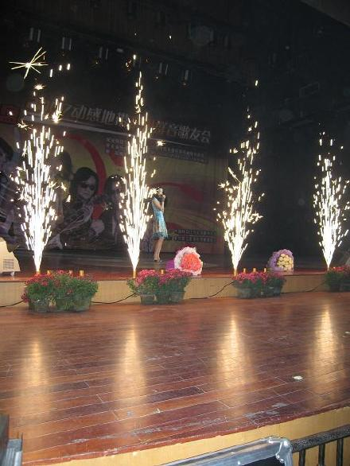
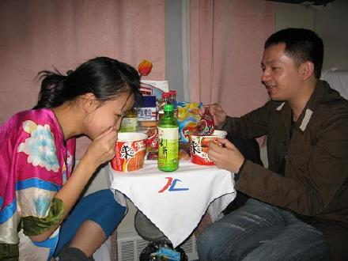

刚刚回来，昨天下午本来１２点半飞机从大连回上海，可是不知道怎么飞机又误点了．一点半才飞的，本来和我的制作人常石磊说好回到上海小聚一下吃顿饭的，没想到登机之前突然接到公司的夺命追魂ＣＡＬＬ，让我一回到上海就飞去录音棚要录一段广告歌．晚上就要用的．．啊．．．我想：拼了！大概３点多到上海的，我一下飞机就冲在第一个去抢出租车直飞录音棚．．．还好一切都完成得很顺利．．
泰州跟大连的演出总体来说都满成功的，哈！先贴点图，明天来补充更新！睡觉了！晚安龄铛们！
很荣幸站在泰州梅兰芳大剧院的舞台上唱歌．．．

